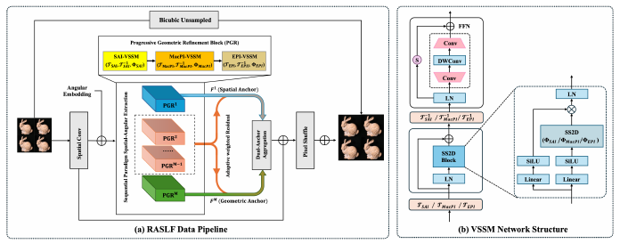
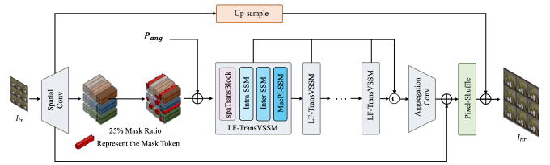
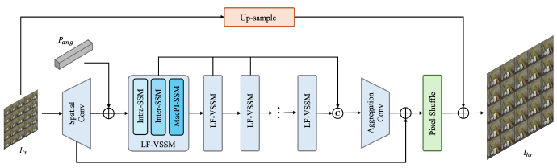
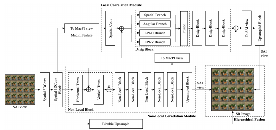
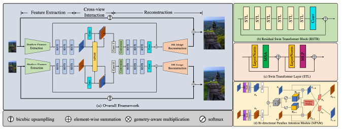

2026arXiv · Preprint
RASLF: Representation-Aware State Space Model for Light Field Super-Resolution
Representation-aware state-space modeling with geometric refinement and feature aggregation for light-field reconstruction.
Staff Engineer II · BIGO · Beijing
I am a Staff Engineer II at BIGO in Beijing, working on computer vision and interactive AI applications. I connect research ideas with practical systems and user experiences.
My research spans light-field and stereo super-resolution, visual representations, and 3D scene understanding, with an emphasis on efficient visual models. I explore convolutional, Transformer and state-space architectures for spatial-angular modeling.
Outside work, I build personal assistants, native apps and games with AI-assisted coding. I also enjoy snowboarding and hiking.

Representation-aware state-space modeling with geometric refinement and feature aggregation for light-field reconstruction.

Combines Transformer context modeling, Mamba and enhanced position-sensitive windowing for light-field super-resolution.

Efficient spatial-angular modeling with state-space networks for lightweight light-field super-resolution.

Hybrid convolutional and Transformer modules learn disparity correlations, with position-sensitive windowing for consistent inference.

Swin Transformer and bidirectional parallax attention exploit cross-view information for stereo image super-resolution.
* Equal contribution. Selected works only; figures are from the corresponding papers.
Selected inventions listing Kai Jin as an inventor. Related CN and WO publications are grouped together.
CN116596774B · Grant published 3 Jul 2026 · Co-inventor · BIGO Technology Pte Ltd.
CN114596259B · Grant published 25 Jul 2025 · Co-inventor · BIGO Technology Pte Ltd. · Related PCT publication: WO2023138590A1.
CN111507226B · Grant published 11 Aug 2023 · Co-inventor · Beijing Juefei Technology Co., Ltd.
CN116471262A · Application published 21 Jul 2023 · Co-inventor · BIGO Technology Pte Ltd.
CN115330947A · Application published 11 Nov 2022 · Inventor · BIGO Technology Pte Ltd. · Related PCT publication: WO2024032464A1.
CN111401560A · Application published 10 Jul 2020 · Co-inventor · Beijing Juefei Technology Co., Ltd.
Publication records checked 28 Oct 2026. WO numbers identify international application publications.
CVPR Workshop · Denver
CVPR Workshop · Nashville
CVPR Workshop · Vancouver
ECCV Workshop · 2nd challenge
CVPR Workshop · New Orleans
ICCV Workshop · 1st challenge
Team awards, listed by year and track. Certificates retain the original author lists.
I welcome conversations about computer vision, applied AI and ideas worth building.
Email: jinkai@bigo.sg